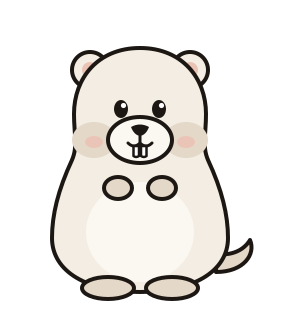

Empty states
Short, helpful, one wink at most, and always a way forward. Each card is a different screen.
The house is dark.
Add a film and we’ll start the screening. Already have a collection on disk? Import the folder and Gonema will match each film.
Tip: press A anywhere to add a film.No films match.
4K HDR, missing, from the 1950s: a rare double bill. Loosen a filter or look further afield.
Quality 4K HDRStatus MissingYear 1950–1959
Nothing in the projector.
No downloads right now. Gonema checks your indexers every 15 minutes.
Next RSS check in 6 min · 12 released films still wantedNo reels logged yet.
Every grab, import, upgrade and failure will be written here, with the reason behind it.

All clear in the booth.
Every monitored film is on disk and at its cutoff. Gonema will tell you when something new comes out.